この章では、3台の zookeeper サーバー側クラスターの構築手順を説明します。
必要な準備作業として、3台の仮想マシン環境を作成し、Java 開発キット JDK をインストールします。VM または vagrant+virtualbox を使用して centos/ubuntu 環境を構築できます。このケースはホストOSの windows10 システムに基づき、vagrant+virtualbox を使用して centos7 環境を構築しています。クラウドサーバーや物理マシンを直接使用する場合も同様です。
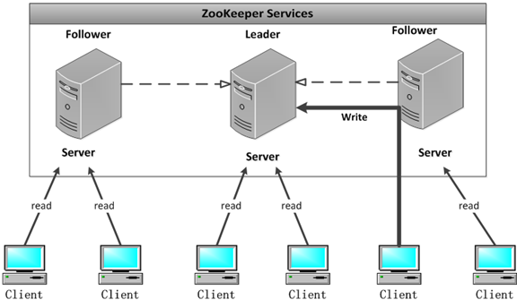
手順1:3台の zookeeper 環境を準備し、前のチュートリアルに従って zookeeper 圧縮パッケージをダウンロードします。3台のクラスター centos 環境は以下の通りです：
マシン1: 192.168.3.33
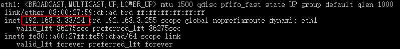
マシン2: 192.168.3.35
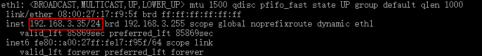
マシン3: 192.168.3.37
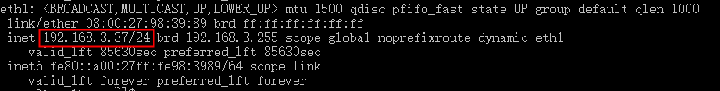
ヒント: IPアドレスを確認するには、ifconfigコマンドを使用できます。
手順2:それぞれ zoo.cfg の設定情報を変更します
zookeeper の3つのポートの役割
- 1、2181: クライアント側にサービスを提供する
- 2、2888: クラスター内のマシン間の通信に使用する
- 3、3888: リーダー選出に使用する
按 server.id = ip:port:portクラスター設定ファイルを変更します:
3台の仮想マシンの zoo.cfg ファイル末尾に設定を追加します:
server.1=192.168.3.33:2888:3888 server.2=192.168.3.35:2888:3888 server.3=192.168.3.37:2888:3888
id と対応するアドレスに基づいて、それぞれ myid を設定します。
vim /tmp/zookeeper/myid
このケースの設定が完了すると、確認結果は次のようになります：
IP 192.168.3.33 のマシンに myid を設定します。このマシンは前のチュートリアルで単体起動したことがあるため、version-2 が表示されますが、なくても問題ありません。
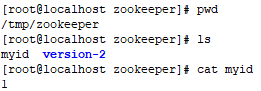
IP 192.168.3.35 のマシンに myid を設定します。
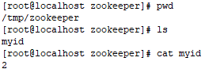
IP192.168.3.37 のマシンに myid を設定します。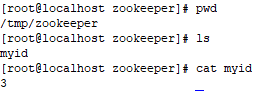
手順3: クラスターを起動
起動前にファイアウォールを無効にする必要があります（本番環境では対応するポートを開放する必要があります）。
systemctl stop firewalld
192.168.3.33 を起動してログを確認します。このときログにエラーが表示されるのは正常です。他の2台がまだ起動していないため、一時的に接続できないからです。
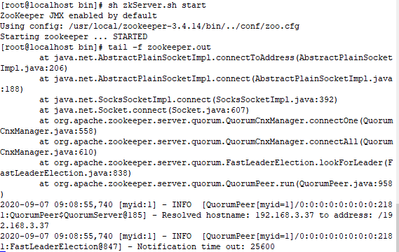
他の2台をそれぞれ起動した後、3台のマシンの状態を確認します：
IP 192.168.3.33
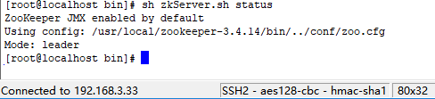
IP 192.168.3.35
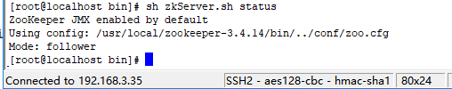
IP 192.168.3.37
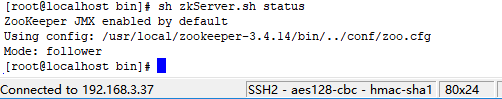
最後にクラスターの構築成功が表示されます！Mode：leader はマスターノードを表し、follower はスレーブノードを表します。マスター1台、スレーブ2台です。
クリックしてノートを共有
<p style="font-size:14px;">ノートはこの記事の内容を拡張したものである必要があります！</p><br> <p style="font-size:12px;"><a href="../tougao.html" target="_blank">記事の投稿は、ここをクリックしてください</a></p> <p style="font-size:14px;"><a href="./runoob-user-test-intro.html" target="_blank">登録招待コードの取得方法</a></p> <h3 class="text-muted"><i class="fa fa-info-circle" aria-hidden="true"></i> ノートを共有する前に<a href=".." class="runoob-pop">ログイン</a>する必要があります！</h3> <p><a href="./runoob-user-test-intro.html" target="_blank">登録招待コードの取得方法</a></p>